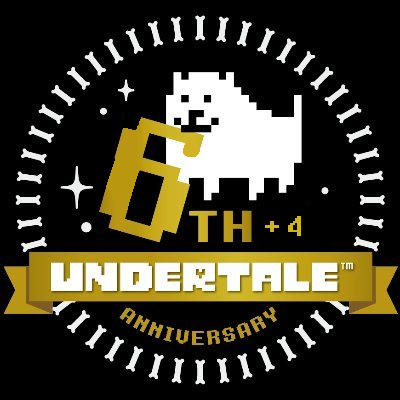
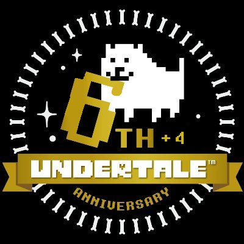

welcome to
.shortpie.'s
web port!
 

— UPDATE NOTES —
version 14 LTS
- Some bugs have been fixed that didn't allow you to use Shift and Control/Command as Cancel and Menu buttons!
- There is now controller support! Any controller should now be plug-and-play so as soon as you connect a controller, you can use it! Have fun!
- Added a new OST player, as well as added songs from UNDERTALE 10th Anniversary album/OST!
- The game itself now looks better than before (thanks to the UT 10th Anniv. team for that!) using an updated canvas.
- There is now an UNDERTALE Yellow port!! You can play it while online, and it has all of the same features as UTWeb.
The Discord server is back and better than ever! Join for development updates and other projects!
base homepage made by bog